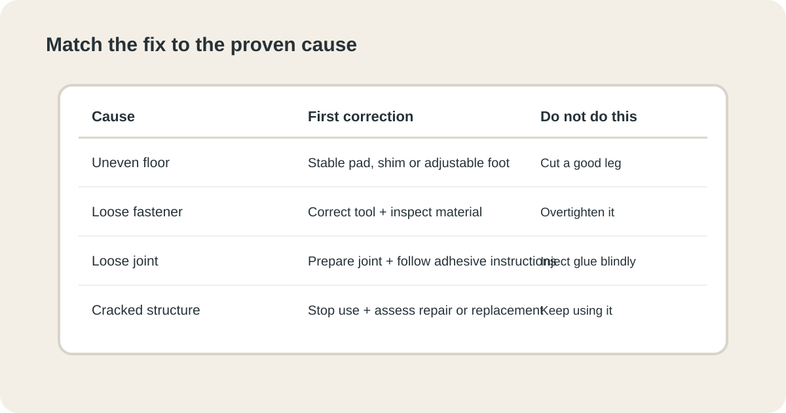

DIY BASICS · FURNITURE
A Simple Way to Fix Wobbly Furniture Without Guessing
A wobble is a symptom, not a diagnosis. Before tightening every screw or adding pads, find out whether the movement comes from the floor, a short contact point, a loose fastener or a joint that has started to fail.


1. Describe the wobble
Do not start by tightening anything. First make the problem repeatable: does it rock front to back, side to side, or only at one corner? Empty, loaded, or both? A chair that rocks only when someone sits has a different problem from a table that rocks on an empty floor. Write down what you can reproduce.
2. Find the cause in three tests
- Floor test. Move the furniture to another reasonably flat spot, then rotate it. If the wobble changes or disappears, the floor is a likely cause. Never shorten a leg to make up for a floor dip.
- Contact test. On a stable surface, press each corner in turn and slide the same thin card under each foot. One foot that lifts, or a card that slips under it much more easily, means a contact-height problem. Movement where the leg meets the frame points to a joint or fastener instead. This is a comparison, not a precise measurement.
- Joint test. With the furniture empty, press each leg-to-frame connection gently and watch it. Look and listen for a gap, a creak, a crack, or a screw that turns without gripping. Do not put your weight on a suspect chair.
Stop using the furniture if a load-bearing part is cracked or split.
3. Match the sign to the fix
| Sign | Likely cause | Fix |
|---|---|---|
| Wobble changes or disappears after you move it | Uneven floor | Put a felt pad or furniture shim under the foot, or screw in an adjustable glide. If several pieces rock in the same spot, the floor is the problem. |
| One foot has a clear gap on a stable surface, joints firm | Small difference in leg height, or a worn foot | Fit an adjustable glide or a thin felt or rubber pad on that foot until the card test passes. Do not cut or sand the leg. |
| A screw turns without gripping | Stripped screw hole | Remove the screw. Push wood-glue-coated toothpicks into the hole until it is full, let the glue dry as the label says, trim them flush, then drive the screw back in. |
| Flat-pack furniture, bolts or cam fittings feel loose | Loose connectors | Re-tighten each bolt and cam fitting with the right tool, a little at a time, working around the piece. Stop when snug; overtightening crushes particleboard. |
| Gap, creak or movement where parts meet | Loose glued joint | If it comes apart easily, scrape off the old glue, apply wood glue to both surfaces, clamp or strap the joint, and leave it to cure for the time on the label. Do not squirt new glue into a closed joint full of old glue. |
| Crack or split in a load-bearing part | Structural damage | Stop using it. Replace the part or get a professional repair. |
You usually need very little: felt pads or adjustable glides, the right screwdriver or hex key, wood glue with a clamp or strap, toothpicks, and a few thin cards. Most of these fixes take under an hour plus glue curing time.
4. Fix only what you proved
- Shims and pads are for a small gap at the floor, when the structure is sound. Use a purpose-made shim, pad or glide that stays put, not folded paper or loose scraps. On hard floors choose a material that will not scratch; on carpet, check that it does not sink unevenly under load.
- Tighten only a fastener you found loose, with the correct tool and modest force. If the wobble stays in exactly the same place afterwards, stop tightening and look at the joint.
- Repair a moving joint; do not hide it under a foot.
- Change one thing at a time, then test. If it did not help, undo it where practical and keep diagnosing.
5. Re-test under the real load
- Put the furniture back on its intended surface.
- Press gently from several directions.
- Add the normal load gradually; do not drop weight onto it.
- Listen for new creaks and watch for any joint opening.
Stop if it is worse, not better. If it stays stable through normal use, leave the fix alone.
6. Safety
Treat chairs, stools, beds, shelves and tall storage as higher-risk, because a failed part can injure someone. For tall furniture, use anti-tip hardware and follow the maker's instructions; the U.S. Consumer Product Safety Commission publishes tip-over guidance. If you find a cracked load-bearing part or a joint you cannot secure reliably, stop using the piece instead of trying stronger fixes.
Related guides for small home repairs
Once the furniture is stable, keep the rest of the home project just as methodical: find and fix a drafty door, reduce cable clutter without creating another mess, or use a simple home reset to catch small maintenance problems before they pile up. If the repair is part of an entryway project, see quiet entryway storage. For a broader weekend-project approach, browse all HomeProjectWise guides.
Frequently Asked Questions
How do I know if the floor is the problem?
Move the furniture to another reasonably flat area and test it again. If the wobble changes or disappears, the floor is a strong suspect.
Can I fix a slightly short leg without replacing it?
Often yes, when the structure is sound. A felt pad, shim or adjustable glide can correct a small difference at the floor.
Why does tightening the screws sometimes not work?
The movement may come from the floor, a stripped hole, worn material or a loose joint rather than the screw itself.
How can I tell whether a wooden joint is actually loose?
Watch the joint while pressing gently. If the joined parts move against each other or a gap opens, the joint needs repair.
When should I stop and get help?
Stop when a load-bearing part is cracked, split, badly damaged or cannot be secured reliably.
Fix the cause, not the symptom. A stable piece of furniture usually comes from a short diagnosis followed by one appropriate correction. If you cannot identify a safe cause, do not keep experimenting.